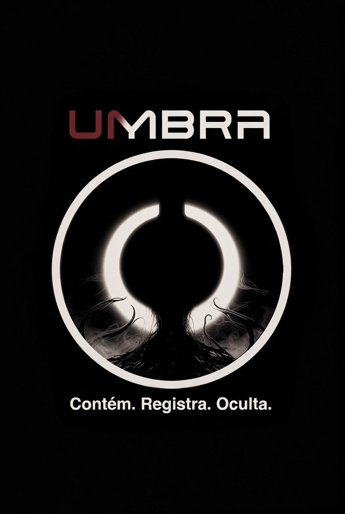

Bem-vindo ao arquivo da escuridão.
Você acaba de acessar os registros da Umbra Corp, uma organização responsável por investigar, catalogar e conter relatos anômalos encontrados nas partes esquecidas da internet.
Entre fóruns abandonados, vídeos corrompidos, transmissões sem origem e histórias que jamais deveriam ter sido publicadas, reunimos evidências de entidades, desaparecimentos e fenômenos que desafiam qualquer explicação racional.
Cada arquivo presente neste catálogo contém fragmentos de casos reais… ou pelo menos é isso que alguns acreditam.
Muitos visitantes afirmam ter ouvido sons vindos de seus dispositivos após navegar pelos registros. Outros relatam sensação de perseguição, falhas elétricas e sonhos recorrentes envolvendo figuras desconhecidas.
A Umbra Corp não se responsabiliza por consequências psicológicas causadas pela exposição prolongada ao conteúdo deste sistema.
Prossiga por sua conta e risco.
“Algumas histórias são apenas histórias. Outras estão esperando para serem encontradas.”
